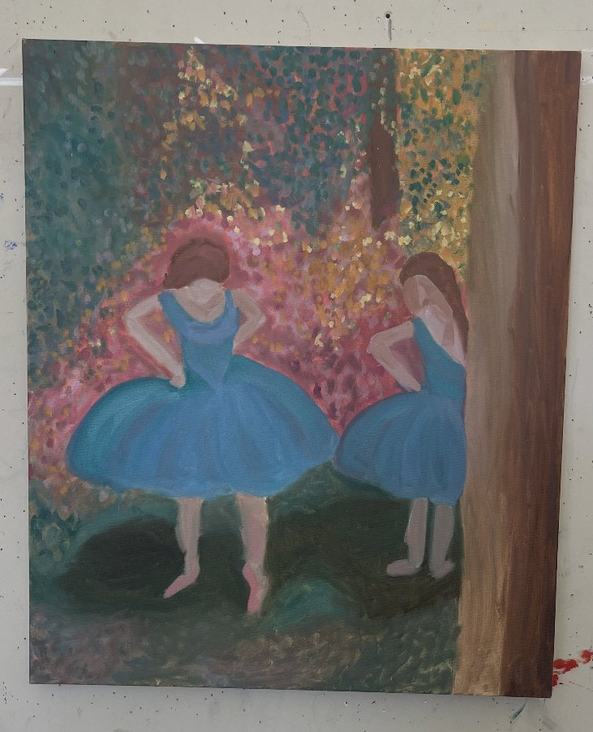
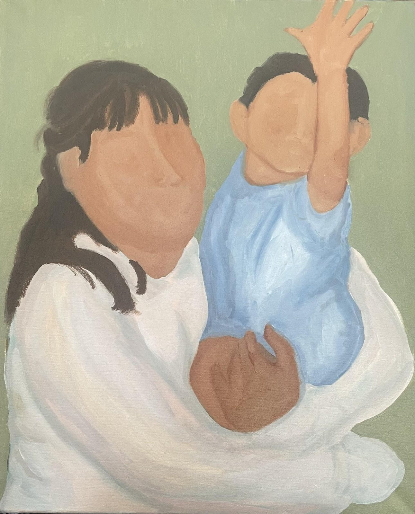

Visual-first profiles
Lead with paintings, prints, drawings, photography, films, galleries, and the work you want to be known for.
Create · Share · Collaborate
Konnekt gives painters, printmakers, illustrators, photographers, filmmakers, designers, and other creatives a place to share their work, find opportunities, and connect with other creatives.



Different mediums.
Same creative energy.
Featured creators
Konnekt Selects
Built for collaboration
Creator pages, project context, search, and saved shortlists work together so visual talent can be found without digging through scattered links.
Lead with paintings, prints, drawings, photography, films, galleries, and the work you want to be known for.
Find collaborators by role, city, visual style, availability, and project type.
Save artists and projects you love, discover collaborators, and connect around creative opportunities.
How it works
Creators lead with paintings, prints, photographs, films, projects, and galleries instead of a plain profile bio.
Discovery can prioritize role, city, category, tags, featured picks, and recent activity.
Visitors can save creators and projects locally, then revisit the list before reaching out.
Community signal